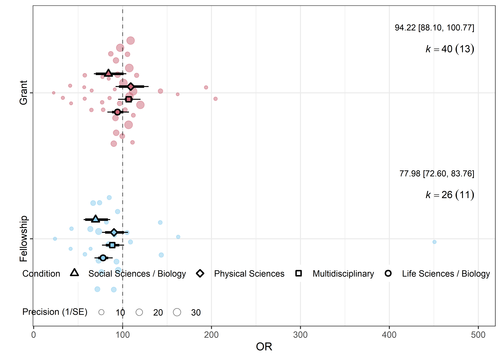
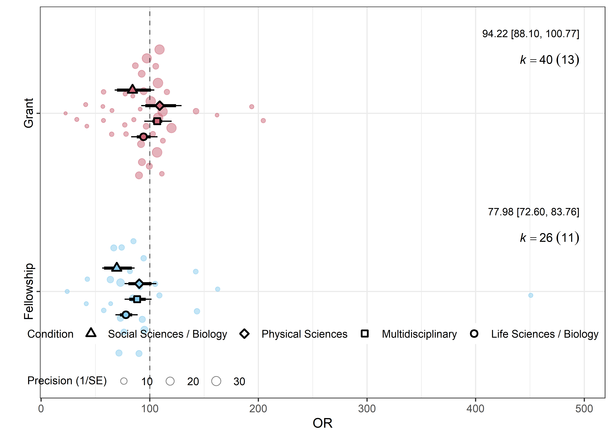
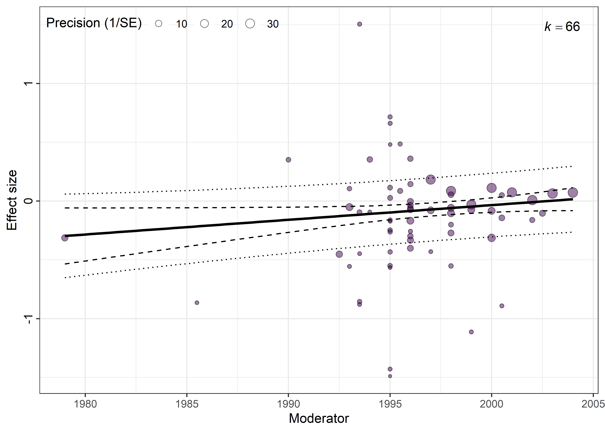

Modelos multinivel
Tamara Ricardo ![]()
Introducción
Desde una perspectiva estadística, los modelos de meta-análisis pueden entenderse como modelos multinivel o de efectos mixtos (GLMM), ya que consideran al menos dos fuentes de variabilidad: el error de muestreo y la heterogeneidad entre estudios. En esta formulación, los estimadores de efecto se consideran anidados dentro de los estudios.
Esta representación resulta insuficiente cuando un mismo estudio aporta múltiples estimaciones de efecto. Por ejemplo, un estudio puede informar resultados para distintos grupos poblacionales, momentos de seguimiento, centros de estudio, intervenciones o desenlaces. En estas situaciones, asumir independencia entre las estimaciones provenientes de un mismo estudio puede conducir a inferencias sesgadas y a una estimación inadecuada de la incertidumbre.
Los modelos de tres niveles abordan esta limitación al incorporar una fuente adicional de variabilidad que representa la heterogeneidad intraestudio, es decir, la variación entre los estimadores de efecto obtenidos dentro de un mismo estudio. De este modo, permiten incluir todas las estimaciones disponibles sin necesidad de agregarlas mediante un promedio ni de seleccionar una única estimación por estudio.
Implementación en R
Podemos ajustar modelos multinivel usando los argumentos cluster y studlab en la siguiente forma:
Donde: 1. Identificador único de la fila/estimador de efecto. 2. Identificador único de estudio.
Sin embargo, las capacidades de meta para este tipo de análisis aún son limitadas. Por ello, utilizaremos el paquete metafor (Viechtbauer 2010) para el ajuste de los modelos y los paquetes gtsummary (Sjoberg et al. 2021) y orchaRd (Nakagawa et al. 2023) para visualizar sus resultados.
Comenzaremos por instalar y cargar los paquetes necesarios. Como orchaRd no está disponible en el repositorio CRAN, debemos instalarlo de la siguiente forma:
remotes::install_github("daniel1noble/orchaRd")Y luego:
library(orchaRd)
pacman::p_load(
metafor,
gtsummary, # Tablas coeficientes
janitor,
tidyverse
)Para este ejemplo, usaremos el conjunto de datos dat.bornmann2007, que analiza el sesgo de género en la adjudicación de becas y subsidios para investigación:
datos <- metadat::dat.bornmann2007
# Explorar datos
glimpse(datos)Rows: 66
Columns: 13
$ study <chr> "Ackers (2000)", "Ackers (2000)", "Ackers (2000)", "Ackers …
$ obs <int> 1, 2, 3, 4, 5, 6, 7, 1, 2, 3, 4, 5, 6, 7, 1, 1, 1, 2, 3, 4,…
$ doctype <chr> "Grey", "Grey", "Grey", "Grey", "Grey", "Grey", "Grey", "Ar…
$ gender <chr> "M&F", "M&F", "M&F", "M&F", "M&F", "M&F", "M&F", "M&F", "M&…
$ year <dbl> 1996.0, 1996.0, 1996.0, 1996.0, 1996.0, 1996.0, 1996.0, 199…
$ org <chr> "MSCA", "MSCA", "MSCA", "MSCA", "MSCA", "MSCA", "MSCA", "DF…
$ country <chr> "Europe", "Europe", "Europe", "Europe", "Europe", "Europe",…
$ type <chr> "Fellowship", "Fellowship", "Fellowship", "Fellowship", "Fe…
$ discipline <chr> "Physical Sciences", "Physical Sciences", "Physical Science…
$ waward <int> 139, 45, 44, 63, 157, 114, 381, 8, 5, 6, 8, 4, 20, 5, 11, 2…
$ wtotal <int> 711, 258, 236, 251, 910, 589, 2027, 13, 8, 8, 16, 11, 44, 1…
$ maward <int> 274, 166, 219, 96, 252, 460, 489, 53, 53, 63, 53, 43, 55, 7…
$ mtotal <int> 1029, 908, 928, 507, 1118, 2244, 2275, 72, 82, 97, 94, 92, …tabyl(datos, study) |>
arrange(-n) |>
adorn_pct_formatting() study n percent
Wood (1997) 9 13.6%
NSF (2005) 8 12.1%
Ackers (2000) 7 10.6%
Allmendinger (2002) 7 10.6%
Brouns (2000) 5 7.6%
Grant (1997) 4 6.1%
Willems (2001) 4 6.1%
Dexter (2002) 3 4.5%
Friesen (1998) 3 4.5%
Taplick (2005) 3 4.5%
Goldsmith (2002) 2 3.0%
Viner (2004) 2 3.0%
Bazeley (1998) 1 1.5%
Bornmann (2005) 1 1.5%
Emery (1992) 1 1.5%
Jayasinghe (2001) 1 1.5%
Over (1996) 1 1.5%
Sigelman (1987) 1 1.5%
Ward (1998) 1 1.5%
Wellcome Trust (1997) 1 1.5%
Wenneras (1997) 1 1.5%tabyl(datos, type) |>
adorn_pct_formatting() type n percent
Fellowship 26 39.4%
Grant 40 60.6%tabyl(datos, discipline) |>
adorn_pct_formatting() discipline n percent
Life Sciences / Biology 26 39.4%
Multidisciplinary 13 19.7%
Physical Sciences 14 21.2%
Social Sciences / Biology 13 19.7%Nuestras variables de interés son: - waward: número de investigadoras que recibieron becas o subsidios. - wtotal: número de investigadoras que se postularon. - maward: número de investigadores que recibieron becas o subsidios. - mtotal: número de investigadores que se postularon. - type: tipo de postulación. - discipline: área disciplinar.
Ajuste del modelo
Comenzaremos usando la función genérica rma() para ajustar un modelo de efectos aleatorios. Esta función permite usar estimadores de efectos precalculados o estimarlos a partir de datos crudos (ver ayuda de la función ?rma()):
- 1
- Número de eventos en el grupo expuesto.
- 2
- Número total de observaciones en el grupo expuesto.
- 3
- Número de eventos en el grupo de referencia.
- 4
- Número total de observaciones en el grupo de referencia.
- 5
- Variable/s moderadora/s de efecto (opcional).
- 6
- Medida de efecto a calcular (en este caso, odds ratio).
- 7
- Conjunto de datos.
- 8
- Identificador de estudio (opcional).
Mixed-Effects Model (k = 66; tau^2 estimator: REML)
logLik deviance AIC BIC AICc
-11.6831 23.3663 29.3663 35.8429 29.7663
tau^2 (estimated amount of residual heterogeneity): 0.0076 (SE = 0.0034)
tau (square root of estimated tau^2 value): 0.0870
I^2 (residual heterogeneity / unaccounted variability): 54.45%
H^2 (unaccounted variability / sampling variability): 2.20
R^2 (amount of heterogeneity accounted for): 65.30%
Test for Residual Heterogeneity:
QE(df = 64) = 133.4811, p-val < .0001
Test of Moderators (coefficient 2):
QM(df = 1) = 24.5719, p-val < .0001
Model Results:
estimate se zval pval ci.lb ci.ub
intrcpt -0.1966 0.0359 -5.4713 <.0001 -0.2670 -0.1262 ***
typeGrant 0.2170 0.0438 4.9570 <.0001 0.1312 0.3027 ***
---
Signif. codes: 0 '***' 0.001 '**' 0.01 '*' 0.05 '.' 0.1 ' ' 1Ajustamos el modelo para el moderador discipline:
# Tipo de postulación
mod2 <- update(mod1, mods = ~discipline)
## Salida del modelo
summary(mod2)
Mixed-Effects Model (k = 66; tau^2 estimator: REML)
logLik deviance AIC BIC AICc
-13.8021 27.6042 37.6042 48.2399 38.6756
tau^2 (estimated amount of residual heterogeneity): 0.0114 (SE = 0.0047)
tau (square root of estimated tau^2 value): 0.1065
I^2 (residual heterogeneity / unaccounted variability): 64.49%
H^2 (unaccounted variability / sampling variability): 2.82
R^2 (amount of heterogeneity accounted for): 47.91%
Test for Residual Heterogeneity:
QE(df = 62) = 136.5290, p-val < .0001
Test of Moderators (coefficients 2:4):
QM(df = 3) = 16.3779, p-val = 0.0009
Model Results:
estimate se zval pval ci.lb
intrcpt -0.1384 0.0369 -3.7507 0.0002 -0.2106
disciplineMultidisciplinary 0.1731 0.0510 3.3965 0.0007 0.0732
disciplinePhysical Sciences 0.1032 0.0770 1.3416 0.1797 -0.0476
disciplineSocial Sciences / Biology -0.1396 0.1094 -1.2762 0.2019 -0.3539
ci.ub
intrcpt -0.0661 ***
disciplineMultidisciplinary 0.2730 ***
disciplinePhysical Sciences 0.2541
disciplineSocial Sciences / Biology 0.0748
---
Signif. codes: 0 '***' 0.001 '**' 0.01 '*' 0.05 '.' 0.1 ' ' 1Para testear la significancia del/os moderadores podemos usar la tabla ANOVA:
anova(mod1)
Test of Moderators (coefficient 2):
QM(df = 1) = 24.5719, p-val < .0001anova(mod2)
Test of Moderators (coefficients 2:4):
QM(df = 3) = 16.3779, p-val = 0.0009Como ambos moderadores son estadísticamente significativos, podemos pensar en una metaregresión múltiple:
mod3 <- update(mod1, mods = ~ type + discipline)
summary(mod3)
Mixed-Effects Model (k = 66; tau^2 estimator: REML)
logLik deviance AIC BIC AICc
-6.8335 13.6670 25.6670 38.3323 27.2226
tau^2 (estimated amount of residual heterogeneity): 0.0032 (SE = 0.0019)
tau (square root of estimated tau^2 value): 0.0562
I^2 (residual heterogeneity / unaccounted variability): 33.56%
H^2 (unaccounted variability / sampling variability): 1.51
R^2 (amount of heterogeneity accounted for): 85.52%
Test for Residual Heterogeneity:
QE(df = 61) = 106.2686, p-val = 0.0003
Test of Moderators (coefficients 2:5):
QM(df = 4) = 58.5102, p-val < .0001
Model Results:
estimate se zval pval ci.lb
intrcpt -0.2487 0.0365 -6.8147 <.0001 -0.3203
typeGrant 0.1892 0.0419 4.5182 <.0001 0.1071
disciplineMultidisciplinary 0.1255 0.0388 3.2380 0.0012 0.0495
disciplinePhysical Sciences 0.1468 0.0662 2.2185 0.0265 0.0171
disciplineSocial Sciences / Biology -0.1147 0.0959 -1.1966 0.2315 -0.3027
ci.ub
intrcpt -0.1772 ***
typeGrant 0.2713 ***
disciplineMultidisciplinary 0.2015 **
disciplinePhysical Sciences 0.2764 *
disciplineSocial Sciences / Biology 0.0732
---
Signif. codes: 0 '***' 0.001 '**' 0.01 '*' 0.05 '.' 0.1 ' ' 1anova(mod3)
Test of Moderators (coefficients 2:5):
QM(df = 4) = 58.5102, p-val < .0001Podemos comparar los AIC de los tres modelos:
AIC(mod1, mod2, mod3) df AIC
mod1 3 29.36627
mod2 5 37.60420
mod3 6 25.66701Si quisiéramos ver los coeficientes para el nivel de referencia, omitimos el intercepto de la forma:
mod3 <- update(mod1, mods = ~ type + discipline - 1)Visualización de resultados
Como metafor ajusta el modelo en la escala logarítmica (log-odds ratio), podemos generar una tabla de coeficientes exponenciados usando la función tbl_regression() de gtsummary:
tbl_regression(mod3, exponentiate = TRUE)| Characteristic | exp(Beta) | 95% CI | p-value |
|---|---|---|---|
| typeFellowship | 0.78 | 0.73, 0.84 | <0.001 |
| typeGrant | 0.94 | 0.88, 1.01 | 0.083 |
| disciplineMultidisciplinary | 1.13 | 1.05, 1.22 | 0.001 |
| disciplinePhysical Sciences | 1.16 | 1.02, 1.32 | 0.027 |
| disciplineSocial Sciences / Biology | 0.89 | 0.74, 1.08 | 0.2 |
| Abbreviation: CI = Confidence Interval | |||
También podemos visualizar los resultados mediante orchard plots, una variante del forest plot donde el estimador global está dado por un símbolo coloreado (trunk) con dos “ramas” horizontales gruesas para el intervalo de confianza (branch) seguidas de dos ramas más finas (twig) para el intervalo de predicción. Cada estimador individual se representa mediante puntos de color semitransparente, con tamaño proporcional a su precisión.
- 1
- Modelo de meta-análisis ajustado con metafor.
- 2
- Nombre de la variable moderadora (por defecto “1” para modelos sin moderadores).
- 3
- Identificador del estudio.
- 4
- Etiqueta del estimador de efecto.
- 5
-
Muestra el estimador de efecto y su intervalo de confianza del 95% (
FALSEpor defecto). - 6
- Transformación aplicada a los resultados (“none” por defecto; “percent” expresa los cambios porcentuales para estimadores en escala logarítmica).
- 7
- Posición de la línea de referencia (0 por defecto).
- 8
- Segunda variable moderadora.

La función posee argumentos adicionales para modificar el tamaño de cada componente u ocultarlos. Además, como está basada en ggplot2, se pueden añadir capas adicionales para modificar la escala de colores, temas, ejes, etc.
Interpretación
Los resultados del modelo muestran que las investigadoras presentan menores probabilidades de recibir becas (Fellowships) que los investigadores. En cambio, para los subsidios de investigación (Grants) no se observan diferencias estadísticamente significativas por género. Adicionalmente, puede apreciarse una considerable variabilidad entre disciplinas, lo que sugiere que la magnitud del sesgo de género no es uniforme entre áreas de conocimiento.
Sin embargo, durante la exploración de los datos observamos que algunos estudios contribuyen con más de un estimador de efecto. Esto viola el supuesto de independencia entre observaciones asumido por los modelos anteriores y justifica el uso de un modelo multinivel que represente explícitamente esta estructura jerárquica.
Ajuste del modelo multinivel
Los modelos multinivel se ajustan usando la función rma.mv(), la cual a diferencia de rma() solo acepta estimadores de efecto precalculados. Por lo tanto, necesitaremos realizar este paso previo usando la función escalc():
- 1
- Medida de efecto a calcular (en este caso, odds ratio).
- 2
- Número de eventos en el grupo expuesto.
- 3
- Número total de observaciones en el grupo expuesto.
- 4
- Número de eventos en el grupo de referencia.
- 5
- Número total de observaciones en el grupo de referencia.
- 6
- Conjunto de datos.
- 7
- Añadir una columna con el nombre de la medida de efecto (opcional).
Si no dispusiéramos del tamaño muestral en cada grupo, podríamos reemplazar n1i por bi (expuestos sin el evento) y n2i por di (no expuestos sin el evento). Los argumentos requeridos dependerán de la medida de efecto especificada en measure.
La función escalc() añadirá al conjunto de datos las columnas yi, que contiene el estimador de efecto transformado a la escala de análisis, y vi, que contiene su varianza muestral. Si se especifica add.measure = TRUE, también se añadirá la columna measure con el nombre de la medida de efecto utilizada.
También necesitamos crear un identificador único para cada estimador de efecto, por ejemplo, a partir del número de fila:
datos <- datos |>
rownames_to_column(var = "id")Este identificador permite distinguir las distintas estimaciones provenientes de un mismo estudio y constituye el nivel inferior de la estructura jerárquica especificada en el modelo.
Una vez que nuestros datos están listos, ajustaremos el modelo de la siguiente forma:
- 1
- Estimador de efecto.
- 2
- Varianza del estimador de efecto.
- 3
- Fórmula indicando la/s variable/s moderadora/s de efecto (opcional).
- 4
- Conjunto de datos.
- 5
- Fórmula especificando el/los efecto/s aleatorio/s.
La expresión random = ~ 1 | study / id especifica una estructura jerárquica de tres niveles. El primer nivel corresponde al error de muestreo de cada estimación, el segundo a la variabilidad entre estimaciones dentro de un mismo estudio y el tercero a la variabilidad entre estudios.
Veamos la salida del modelo:
# Salida modelo
summary(mod3_multi)
Multivariate Meta-Analysis Model (k = 66; method: REML)
logLik Deviance AIC BIC AICc
-6.8335 13.6670 27.6670 42.4431 29.7802
Variance Components:
estim sqrt nlvls fixed factor
sigma^2.1 0.0000 0.0000 21 no study
sigma^2.2 0.0032 0.0562 66 no study/id
Test for Residual Heterogeneity:
QE(df = 61) = 106.2686, p-val = 0.0003
Test of Moderators (coefficients 1:5):
QM(df = 5) = 62.0517, p-val < .0001
Model Results:
estimate se zval pval ci.lb
typeFellowship -0.2487 0.0365 -6.8155 <.0001 -0.3203
typeGrant -0.0595 0.0343 -1.7358 0.0826 -0.1267
disciplineMultidisciplinary 0.1255 0.0388 3.2386 0.0012 0.0495
disciplinePhysical Sciences 0.1468 0.0662 2.2186 0.0265 0.0171
disciplineSocial Sciences / Biology -0.1147 0.0959 -1.1965 0.2315 -0.3027
ci.ub
typeFellowship -0.1772 ***
typeGrant 0.0077 .
disciplineMultidisciplinary 0.2015 **
disciplinePhysical Sciences 0.2764 *
disciplineSocial Sciences / Biology 0.0732
---
Signif. codes: 0 '***' 0.001 '**' 0.01 '*' 0.05 '.' 0.1 ' ' 1Podemos observar que los coeficientes cambian ligeramente respecto al modelo de efectos aleatorios. Adicionamente, la heterogeneidad (tau-cuadrado) ahora aparece dividida en dos componentes:
sigma^2.1: variabilidad entre estudios.sigma^2.2: variabilidad entre estimadores de efecto de un mismo estudio.
Esta descomposición permite cuantificar qué proporción de la heterogeneidad total se debe a diferencias entre estudios y qué proporción corresponde a diferencias entre estimaciones obtenidas dentro de cada estudio. La función i2_ml() de orchaRdpermite obtener estimaciones de \(I^2\) intraestudio (\(I^2_{nivel2}\)) e interestudio (\(I^2_{nivel3}\))
i2_ml(mod3_multi) |>
round(2) I2_Total I2_study I2_study/id
33.44 0.00 33.44 También podemos generar la tabla de coeficientes y el orchard plot para visualizar los resultados:
tbl_regression(mod3_multi, exponentiate = TRUE)| Characteristic | exp(Beta) | 95% CI | p-value |
|---|---|---|---|
| typeFellowship | 0.78 | 0.73, 0.84 | <0.001 |
| typeGrant | 0.94 | 0.88, 1.01 | 0.083 |
| disciplineMultidisciplinary | 1.13 | 1.05, 1.22 | 0.001 |
| disciplinePhysical Sciences | 1.16 | 1.02, 1.32 | 0.027 |
| disciplineSocial Sciences / Biology | 0.89 | 0.74, 1.08 | 0.2 |
| Abbreviation: CI = Confidence Interval | |||
orchard_plot(
mod3_multi,
mod = "type",
group = "study",
xlab = "OR",
est = TRUE,
transfm = "percent",
refline.pos = 100,
by = "discipline"
)
Si tuviéramos un moderador continuo, como ser el año de publicación, usamos la función bubble_plot():
# Modelo con moderadores continuos y categóricos
mod4 <- update(mod3, mods = ~year)
# Bubble plot
bubble_plot(
mod4,
mod = "year",
group = "study"
) +
scale_fill_viridis_d()